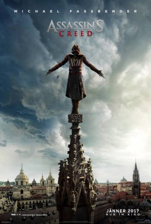

 
 IMDB-Wertung: 6.1 / 10
IMDB-Wertung: 6.1 / 10  Metascore:
Metascore: 
Callum Lynch (Michael Fassbender) ist Gefangener einer Sekte die ihn entführte und mittels neuester Gentechnologie die Leben seiner Vorfahren durchleben lassen. Dabei stößt Callum auf einen geheimnisvollen Bund der sich Die Assassinen nennt. Dieser Geheimbund existierte im Fünfzehnten Jahrhundert in Spanien doch gibt es ihn bis heute? Assassin's Creed ist der Film der gleichnamigen Videospielreihe von Ubisoft.
Jahr: 2016
Dauer: 116 Minuten
FSK: 16
Land: England Studio: 20th Century FoxTonspuren: DTS - ,
Untertitel: Deutsch, Englisch,
Auflösung: 1080p (1920x808) Größe: 4567 MB
Genre: Action, Drama, Sci-Fi, Abenteuer, Fantasy
Regisseur: Justin Kurzel
Drehbuch: Matt Deller
Soundtrack:
Darsteller:
Datei: X:\2016(A-F)\Assassin's Creed (2016, FSK16, 1920x808) 3D.mkv seit 20.03.2017
Festplatte: HD 2016(A-Z)
 Es gibt insgesamt 147 Filme in der Gruppe '2016(A-F)'
Es gibt insgesamt 147 Filme in der Gruppe '2016(A-F)'